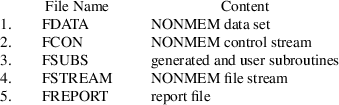

A subroutine may be generated from an abbreviated code in an NM-TRAN control stream, as explained in chapter I. Such a routine is called a generated subroutine
or a generated code
With NONMEM 7 this is the only choice because NM-TRAN Library subs are no longer supported.
Typically, NM-TRAN is run using shell script nmfe74 and batch file nmfe74.bat (nmfe stands for "NonMem Front-End"; "74" indicates the version of NONMEM). These are supplied with NONMEM. NM-TRAN creates certain files for use by nmfe. However, any user-written or third-party interface may be used. It may (or may not) invoke NM-TRAN before running NONMEM. It may use any of the files created by NM-TRAN.
NM-TRAN takes its input from two files: one file contains the NM-TRAN control stream, and one file contains the NM-TRAN data set. The control stream points to the name of the file containing the data set. For more information about how to run NM-TRAN, see Guide III. NM-TRAN outputs several files with names as shown:

FDATA and FCON are needed in a NONMEM run and have already been mentioned in chapter I. If NM-TRAN actually modifies the NM-TRAN data set, then the modification, the NONMEM data set, is contained in FDATA.
With NONMEM 7.5, an additional file, FDATA.csv is produced that outputs the contents of its input data file (typically FDATA) in a comma delimited file format, so you can check how NONMEM interprets the input data. The records in FDATA.csv may differ from those in FDATA in the following cases. If REPL/REPL_ is used, the replicated form of the data will appear in FDATA.csv. Also, records excluded by PRED_IGNORE_DATA will not be present in FDATA.csv.
If, though, NM-TRAN does not
need to modify the NM-TRAN data set, then the NONMEM data
set is simply identified with the NM-TRAN data set and is
found in whatever file contains the latter. FSUBS contains
the FORTRAN-coded subroutines generated from abbreviated
codes. With NONMEM 7, FSUBS contains additional subroutines;
see below. All subroutines in FSUBS must be compiled and the
resulting object modules used in the NONMEM load
module.†
----------
† The NONMEM
executable is also referred to as the NONMEM load module.
This is a different usage of the word "module"
than the Fortran 90 MODULE’s discussed below; the
latter will always have the word MODULE in upper-case.
----------
FSTREAM is also needed in the NONMEM run. The NONMEM file stream is described in Guide I, section B.3. Sometimes a NONMEM run does not need a file stream (see Guide I, section C.3.1). However, whenever NM-TRAN is used before NONMEM, a NONMEM file stream is needed. (This is because with NM-TRAN, the NONMEM data set is never embedded in the NONMEM control stream, and the NONMEM file stream is needed to point to the file containing the NONMEM data set.) FREPORT contains a list of all the routines which must be present in a NONMEM load module in order to implement the NONMEM run specified by the NM-TRAN inputs. It may be useful to the user to have this information, but this file is not needed by NONMEM. For more about how this information could be useful, see Guide III, which discusses the shell script nmfe74 and batch file nmfe74.bat.
Examples of FDATA, FCON, FSTREAM, FREPORT, and FSUBS are given in Appendix III. These examples result from using the NM-TRAN control stream shown in chapter I along with the NM-TRAN data set shown in Appendix II.
FSUBS contains several subroutines and MODULES in addition to those generated for the user’s abbreviated code, as follows.
|
SUBROUTINE MUMODEL2 (nm71) |
The MUMODEL2 subroutine is based on the PRED or PK subroutine in FSUBS. It contains only statements (if any) for the MU_ model, which is used in the new (Bayseian) methods of NONMEM. This subroutine is frequently called during the Estimation Step, more often than PRED or PK. The fewer code lines that MUMODEL2 has to go through to evaluate all the MU_s the more efficient.
|
SUBROUTINE FSIZESR (nm72) |
Starting with NONMEM 7.2,
dynamic memory allocation is performed in NONMEM. Subroutine
FSIZESR contains the constants for the allocation in this
run. The $SIZES record can be used to override some of the
values in FSIZESR. Constants set to 0 cannot be determined
or are not given by NM-TRAN and will default to the values
hard-coded in resource/SIZES.f90†
----------
†The
NONMEM installation directory contains several
subdirectories. One is resource, in which the file SIZES.f90
may be found. Another is util, which contains utility files
such as nonmem_reserved_general (see Chapter IV.J.4).
----------
|
MODULES NMPRD4, PRINFN, and DECLAREVARIABLES |
NMPRD4 is an area of storage that is defined by NONMEM. It may be used by user-supplied and generated code, and also by NONMEM. Variables stored in this area can be displayed by NONMEM in tables and scatterplots. It is possible for the user to set aside a portion of NMPRD4 for variables defined in user-supplied code, or for variables directly controlled by the user (see COMACT, COMRES, COMSAV in Chapters III.B.7 and IV.E.2). The implementation of NMPRD4 changed with NONMEM 7.
PRINFN is an area of storage that may be used by user-supplied and generated code, but not by NONMEM. PRINFN is generated only if an $INFN block of abbreviated code is present and defines variables. The implementation of PRINFN changed with NONMEM 7.
DECLAREVARIABLES is an area of storage that is defined using the $ABBREVIATED DECLARE control record. (nm73)
See Section D, below, for more information.
|
SUBROUTINE THETAISUB and SUBROUTINE THETARSUB (nm73) |
These subroutines implement the $THETAI and $THETAR blocks of code, respectively, if present in the NM-TRAN control stream. If either or both blocks are not present, the corresponding subroutine is not present in FSUBS.
Several other files are also generated by NM-TRAN.
|
FSUBS_MU.F90 |
This file contains the MUMODEL2 portion of FSUBS (the MU_ model statements). File FSUBS_MU is produced for easy reading by the user, and is not used by the NONMEM system. It allows the user to see easily how the MU_ model is implemented in generated code. File FSUBS_MU may be ignored.
|
FSIZES |
File FSIZES contains the same values as the FSIZESR routine in FSUBS. File FSIZES is produced for easy reading by the user, and is not used by the NONMEM system. File FSIZES may be ignored.
|
PRSIZES.f90 (nm72) |
PRSIZES.f90 contains sizes for compiling PREDPP or a user-supplied or generated PRED ("pr recompile" in nmfe74). This is discussed in Guide VI, Chapter VII.A.
|
FMSG |
This file contains normal and warning and error messages arising from the program’s efforts to translate the NM-TRAN data set and control stream. The messages are also displayed at the terminal by NM-TRAN. When errors are detected, Files 1-5 may be incomplete, and NONMEM should not be run. Even if there are no fatal errors and NM-TRAN and NONMEM seem to terminate normally, the warning messages in FMSG should be reviewed, because they may describe situations in which the NONMEM results may be incorrect. |
FORIG, FREPL
|
When the $ABBR REPLACE statement is present in the NM-TRAN control stream, NM-TRAN produces two files: |
FORIG - Contains the original
(pre-replacement) abbreviated code and $TABLE and $SCATTER
records.
FREPL - Contains the new (post-replacement) abbreviated code
and $TABLE and $SCATTER records.
These may be helpful for debugging.
|
FSUBS2, FSUBS.F90 |
FSUBS2 and FSUBS.F90 are copies of FSUBS.
|
thetair.f90 |
This file contains the subroutines THETAISUB and THETARSUB, if present in FSUBS.
NONMEM creates a number of files during the run.
INTER
If an MSF is output, and intermediate output with iteration summaries is requested (i.e., $ESTIM options MSFI and PRINT are used), then NONMEM also writes the parameter estimates of these summaries to the console and to file INTER, which now exists after the run terminates. INTER now include lines giving the parameter estimates in their natural unscaled space (NPARAMETR) as well as the UCP values (PARAMETER) (nm72).
Additional output files are
produced by NONMEM. These provide a more efficient way of
way of extracting numerical results from the analysis. Names
of the files start with "root", where root is the
root name (not including extension) of the NM-TRAN control
stream file. The files have names with extensions (suffixes)
.ext, .cov, .coi,
.cor, .phi, .phm, .grd, .shk, .shm, .cnv, smt, .rmt, etc.
The file root.ext is called the raw output file. The root
name may be specified by $ESTIMATION record option FILE.
(nm72).
A NM-TRAN data set is much like
a NONMEM data set. In particular, each data record consists
of a sequence of data items, these data items are of the the
same types across all data records (unless some data records
serve as continuations for others), and the data records are
grouped into individual records.†
----------
† Note the
difference between a data record (which is a single
record in a data file) and an individual record,
which is a group of contiguous data records having the same
value for the ID data item and presumably containing data
from the same individual. (When the data are not population,
then the all the data records comprise a single individual
record.)
----------
An example of a NM-TRAN data set is given in Appendix II, and the first two individual records of this data set are these:
1 4.02 0. .74 79.6
1 . 0.25 2.84 .
1 . 0.57 6.57 .
1 . 1.12 10.5 .
1 . 2.02 9.66 .
1 . 3.82 8.58 .
1 . 5.1 8.36 .
1 . 9.05 6.89 .
1 . 7.03 7.47 .
1 . 12.12 5.94 .
1 . 24.37 3.28 .
2 4.4 0. 0. 72.4
2 . .27 1.72 .
2 . .52 7.91 .
2 . 1. 8.31 .
2 . 1.92 8.33 .
2 . 3.5 6.85 .
2 . 5.02 6.08 .
2 . 7.03 5.4 .
2 . 9. 4.55 .
2 . 12. 3.01 .
2 . 24.3 .90 .
This same data set could be used as a NONMEM data set; it conforms to all the requirements of a NONMEM data set. A dot (surrounded by blanks) would be interpreted in a NONMEM run as a data item which is 0. Dots can substitute for 0 data items in order to improve the readability of the data set. Fields of blanks can also be used for the same purpose; see, for example, the NONMEM data set in Appendix III. This is because a FORTRAN format specification for the data set is always supplied in the NONMEM control stream. (Such a format specification can also be supplied in the NM-TRAN control stream, and when it is, fields of blanks can be used in the NM-TRAN data set). However, there are other NM-TRAN data sets which are convenient to use, but cannot be used as NONMEM data sets; NM-TRAN must be used to translate these to NONMEM data sets.
In general, use of NM-TRAN simplifies things for the user. For one thing, it is not required that a FORTRAN format specification be supplied in the NM-TRAN control stream. Without a format specification there really need be no fields of fixed lengths, even though in the example the data items have been lined up (in informal fields of fixed lengths) to improve readability. NM-TRAN understands two data items in a data record to be separated by any number of blanks or by a comma. It recognizes and translates the dot to a field of blanks (or to a field consisting of a specified character preceded by blanks).
The question "When Must a Format Specification be Included or Omitted?" is discussed in NONMEM Users Guide - Part V Introductory Guide, Chapter 6, Section 10.4.
Another way to format these data records for NM-TRAN is this:
1,4.02,0. .74 79.6
1,,0.25 2.84
1,,0.57 6.57
1,,1.12 10.5
1,,2.02 9.66
1,,3.82 8.58
1,,5.1 8.36
1,,9.05 6.89
1,,7.03 7.47
1,,12.12 5.94
1,,24.37 3.28
2,4.4,0. 0. 72.4
2,,.27 1.72
2,,.52 7.91
2,,1. 8.31
2,,1.92 8.33
2,,3.5 6.85
2,,5.02 6.08
2,,7.03 5.4
2,,9. 4.55
2,,12. 3.01
2,,24.3 .90
Beginning with NONMEM 7.1, The maximum number of characters in a data item is given by constant SDF in resource/sizes.f90. This is 24. With previous versions, the maximum number was 12.
Notice that two successive commas act as a single dot, and a record may terminate with a data item which is not the last one if the subsequent data items in the record can be represented by dots.
Such items are referred to as null data items. They are replaced by a field of blanks in the NONMEM data set. Null data items can be instead be replaced with one consisting of a specified alphanumeric character. The NULL option of $DATA may be used to specify a different character (e.g., NULL=. or NULL=0). See Chapter III.B.5.
A file saved from Excel as a csv file ("comma separated values") may used as an NM-TRAN input file.
Starting with NONMEM vi.2.0, a
tab character may also be used to separate data items. E.g.,
let T stand for the tab character.
"1T2" and "1,2" are read as "1
2"
"1TT2" and "1,,2" are read as "1 0
2"
Thus, a file saved from Excel as a txt file ("Text (tab delimited)" or "Windows Formatted Text") may also be used as an NM-TRAN input file.
Starting with NONMEM VI.2.0, MS-DOS formated files can be read in Unix. These are control files and data files having a carriage return character at the end of the line. Such characters may appear as "^M" in NONMEM output.
Useful information for operating
systems as of 1992 can be found in the Introduction to
Version VI (intro.pdf). This information may be relevant to
more recent operating systems. In particular, see
Section 26. "NM-TRAN datafiles - Ill-formed files"
Section 29. "NM-TRAN datafiles: Tab and ^M".
Null data items as described above consist of a single dot (.) or consecutive commas or consecutive tabs.
It may happen that a record in the NM-TRAN data file is totally blank. NM-TRAN will produce an error message unless $DATA option BLANKOK is used. In this case, there is no error message and the corresponding record in the NONMEM data set will contain null values.
Another way to format these data records for NM-TRAN is this:
1 4.02 9:00 .74 79.6
1 . 9:15 2.84 .
1 . 9:34 6.57 .
1 . 10:07 10.5 .
1 . 11:01 9.66 .
1 . 12:49 8.58 .
1 . 14:06 8.36 .
1 . 18:03 6.89 .
1 . 16:02 7.47 .
1 . 21:07 5.94 .
1 . 33:22 3.28 .
2 4.4 8:00 0. 72.4
2 . 8:16 1.72 .
2 . 8:31 7.91 .
2 . 9:00 8.31 .
2 . 9:55 8.33 .
2 . 11:30 6.85 .
2 . 13:01 6.08 .
2 . 15:02 5.4 .
2 . 17:00 4.55 .
2 . 20:00 3.01 .
2 . 32:18 .90 .
Here the third data item of each
record, which is a value of time in hours, has been
expressed as a clock time, rather than as a relative time.
NM-TRAN can accept clock time; NONMEM (and PREDPP) cannot.
NM-TRAN translates a clock time to a relative time.
Information in the NM-TRAN control stream indicates that
translation of this type should be performed; see section
III.B.2. When this is done, all times in the NM-TRAN data
set are assumed to be clock times. A clock time is either of
form hr:min, as in the example, or hr.fr, where fr is a
decimal fraction of the hour to two digits, using a military
clock in both cases. E.g. 2:45PM can be expressed either as
14:45 or 14.75.
With NONMEM 7.3, values may also have the form hh:mm:ss
(i.e., hours:minutes:seconds). For example, 8:45:29.
NM-TRAN provides five digits (xxxxx.xx), which allows relative time to be at most approximately 4166 days. Furthermore, when the $DATA record includes the option WIDE, six digits (xxxxxx.xx) are provided.
NM-TRAN makes a distinction between population data and single-subject data; see section C.4. If the data are population data, then the clock time in the first data record of an individual record is translated to relative time 0. If the data are single-subject data, then the clock time in the first data record of the data set is translated to relative time 0. If PREDPP is used, then a time on a reset or reset-dose event record is translated to relative time 0, whether the data type is population or single-subject.
Yet another way to format these data records for NM-TRAN is this:
1 4.02 10/1 9:00 .74 79.6
1 . 10/1 9:15 2.84 .
1 . 10/1 9:34 6.57 .
1 . 10/1 10:07 10.5 .
1 . 10/1 11:01 9.66 .
1 . 10/1 12:49 8.58 .
1 . 10/1 14:06 8.36 .
1 . 10/1 18:03 6.89 .
1 . 10/1 16:02 7.47 .
1 . 10/1 21:07 5.94 .
1 . 10/2 9:22 3.28 .
2 4.4 10/1 8:00 0. 72.4
2 . 10/1 8:16 1.72 .
2 . 10/1 8:31 7.91 .
2 . 10/1 9:00 8.31 .
2 . 10/1 9:55 8.33 .
2 . 10/1 11:30 6.85 .
2 . 10/1 13:01 6.08 .
2 . 10/1 15:02 5.4 .
2 . 10/1 17:00 4.55 .
2 . 10/1 20:00 3.01 .
2 . 10/2 08:18 .90 .
Here calendar dates have been included, and clock time has been treated modulo 24 hours. These dates are called date data items
Information in the NM-TRAN control stream indicates that translation with this type of data should be performed; see section III.B.2. Information in the NM-TRAN control stream also indicates that the date data items should not appear in the NONMEM data set; only the relative time data items should appear where clock time data items appear. More generally, instead of month followed by day in date data items, day can follow month, and year can also be included at either the beginning or end of the data items. Or, only day need be given. Again, the choice of format in this regard is specified in the control stream. Regardless of format, with any date data item any non-numeric character, except comma or blank, can separate the date fields. Here are some examples of possibilities: 10/1, 10-1, 10-1-1986, 10-1-86, 86-10-1. Leap years are recognized; they are years 4, 8, 12, etc. If year is omitted from the format, the year is assumed to be year 0, which is not a leap year. When the date data items only give days (months and years are missing), then these data items can be any positive or negative integers, and for the purpose of computing relative times, they are ordered in the same way as are the integers.
If year is recorded with four
digits, it is always processed correctly and the value of
LAST20 is of no consequence. The following discussion only
affects years that are recorded with two digits. The year
1900 was not a leap year, but the year 2000 was a leap year.
A constant LAST20 in resource/TRGLOBAL.f90 affects how two
digit years are interpreted.
One or two digit years > LAST20 are assumed to be in the
1900’s,
One or two digit years <= LAST20 are assumed to be in the
2000’s.
The default value of LAST20 is 50. Two digit years are
interpreted as follows:
00-50 = 2000-2050
51-99 = 1951-1999
The option LAST20 on the $DATA record can be used to change how two digit years are interpreted. For example, LAST20=-1 can be used when two digit years span the year 2051. All two digit years will be assumed to be in the same century.
The TRANSLATE option of the $DATA record was new to NONMEM V and has been expanded with NONMEM 7.3. Any values may be given for dividing TIME and II values, and any precisions may be requested for the result. An example is:
$DATA TRANSLATE (TIME/0.01/6)
which divides TIME values by 0.01, and writes 6 digits to the right of the decimal. TRANSLATE may be used to convert hours to days. E.g., TIME/24.000 or TIME/24.00. With NONEM 7.3, new choices are TIME/F, TIME/F/D and II/F, II/F/D. F ("factor") and D ("digits") may be integer or real values. This is independent of day-time translation. That is, TRANSLATE may be specified whether or not day-time translation occurs, and is applied by NM-TRAN after day-time translation. The user must insure that the units of PK parameters such as CL or K are consistent with the units of TIME. See Guide VIII on-line help description for $DATA TRANSLATE for more information.
Comments can be included in NM-TRAN data sets. E.g.
1 . 12.12 5.94 .
1 . 24.37 3.28 .
C This next individual may be an outlier
2 4.4 0. 0. 72.4
2 . .27 1.72 .
If requested, any (FORTRAN) record with a designated character in position 1 is ignored, i.e. it does not appear in the NONMEM data set. The character used in position 1 must be the same for all comment records; it is specified in the $DATA record using IGNORE=C (see section III.B.5).
Note that the IGNORE and ACCEPT options of the $DATA record can also be used to select records according to the values of specified data items. This is also discussed in section III.B.5.
NONMEM data records are grouped into contiguous sets of records called individual records
With population data, where there are multiple observations from multiple subjects, an individual record contains the data records associated with a given subject. Each data record of the individual record has the same ID data item. NONMEM can also be used to analyze data from a single subject. With such data, and when each observation consists of a single number, an individual record is simply any group of contiguous data records including only one observation record and having the same ID data item if the number of data records in the group is two or more. When a multivariate observation is present, the individual record containing it includes several observation records, each containing one element of the observation.
The inclusion of ID data items in a data set with single-subject data is a little unnatural, and it is not commonly required by computer programs that are meant to be used only with single-subject data, With single-subject data, NM-TRAN automatically generates the ID data items required in a NONMEM data set. Such ID data items are called generated ID data items Usually, this is advantageous. There are situations, though, where the generated ID data items are not appropriate, and then generated ID data items should be disallowed; see below. Most notably, such a situation occurs when multivariate observations are included in the data set. The mechanism for disallowing generated ID data items is given in sections C.4.2 and III.B.2.
NM-TRAN "recognizes"
the difference between population data and
single-subject data †
(NONMEM itself also makes this distinction, which it makes
available to PRED via reserved variable IPS.)
A data set consisting of population data is called a
population data set
A data set consisting of
single-subject data is called a single-subject data
set †
----------
† In the first
edition of this guide and in certain other NONMEM Users
Guides, the terms individual data and individual
data set are used instead of single-subject data and
single-subject data set.
----------
The only consequence of NM-TRAN’s ability to recognize this difference between data types is to allow ID data items to be automatically generated with single-subject data. NM-TRAN infers from information in the control stream whether the data are of one type or the other. The way this is done is outlined next. For details, see section C.4.2.
Both NONMEM and NM-TRAN explicitly recognize two types of random variables, @eta@-variables and @epsilon@-variables. These two types are nested, i.e. for any set of fixed values for the @eta@-variables, the @epsilon@-variables can assume different values, but not conversely. The @epsilon@ variables can only occur along with @eta@ variables, and then they represent random intraindividual effects, while the @eta@ variables represent random interindividual effects. If control stream information indicates that @epsilon@ variables occur in the statistical model, then population data are inferred. To infer population data when the @epsilon@ variables occur is consistent with the fact that with population data there are both random intersubject and random intrasubject effects in the statistical model; then the interindividual (intraindividual) effects are identified with the intersubject (intrasubject) effects. (However, for noncontinuous population data see the discussion below.)
If population data are not inferred, then only @eta@ variables occur in the model. These variables, occuring by themselves, are nonnested variables. They can represent either intersubject effects or intrasubject effects. (The terms ’intrasubject’ and ’intraindividual’ are used interchangeably, but the term ’interindividual’ is reserved; see below.) With single-subject data there is no subject-to-subject variability, and the @eta@ variables represent intrasubject effects. When each observation comes from a different subject, either the data are regarded as population data and @epsilon@ variables are used, or more usually, intrasubject variability is not distinguishable from intersubject variability, and @eta@ variables only are used to represent the one type of random effect. As long as only @eta@ variables occur in the statistical model and the observations are taken to be statistically independent, it really makes no difference whether the @eta@ variables are regarded as representing intersubject or intrasubject random effects. Statistically, the observations being modeled can be regarded as arising from a single subject, or each observation can be regarded as coming from a different subject. The NONMEM convention is to take a "middle position". The term individual is used to mean an individual observation in the population of observations. Thus no matter how the data actually arise, the @eta@ variables can be regarded as representing interindividual effects. Moreover, in deference to the often-occuring pharmacokinetic study where data arise from a single-subject, when the data are not recognized as population data, they are called single-subject data, even when different observations actually arise from different subjects. This convention conforms with a convention of PREDPP, whereby when only nonnested random variables occur, the data are regarded as single-subject data (Guide VI, section IV.A).
With single-subject data, each observation must be in a different individual record (this requirement is a consequence of the fact that the @eta@ variables represent interindividual effects). Accordingly, if one wants to extract an individual record from a population data set and use this record as a single-subject data set (a new NM-TRAN data set), the ID data items in this record must be changed since they are all equal. In this case one might allow NM-TRAN to generate new ID data items for the single-subject data set. At the same time one might (but one need not) instruct NM-TRAN to exclude the old ID data items from the NONMEM data set (see discussion of the DROP attribute in section III.B.2). Whether or not one does the latter, NONMEM will be properly instructed to use only the new ID data items.
There are single-subject data sets where generated ID data items should be disallowed. One example is where there are multivariate observations. Each element of the multivariate observation must be placed on a different data record, but each of these records must be included in the same individual record. Were generated ID data items allowed, a multivariate observation would span more than one individual record. In this example, the user must include appropriate ID data items in the NM-TRAN data set.
Note that sometimes the data are population data in the sense that multiple observations are obtained from multiple subjects, but @epsilon@ variables are not used in the statistical model. This situation arises when, for example, the data are categorical, rather than continuous. Then @eta@ variables still represent random interindividual effects, and random intraindividual variablity exists, but it is expressed without the use of @epsilon@ variables. If option LIKELIHOOD or -2LL is used on the $ESTIMATION record, NM-TRAN recognizes this as odd-type data and does not generate the ID data item. See II.II.D below.
Note that NONMEM can also analyze a population data set as if the data from each individual were single-subject data. ("POPULATION WITH UNCONSTRAINED ETAS"); see Section III.B.10 (nm73).
NM-TRAN infers that the data are population data when at least one of the following is true of the control stream:
|
1. |
An abbreviated code is present which uses EPS’s. |
See section IV.A
|
2. |
An abbreviated code is present which uses ETA’s, and an abbreviated code is present (perhaps the same one) which uses ERR’s. |
See section IV.A
|
3. |
A $SIGMA record is used. |
See section III.B.11.
|
4. |
A $MSFI record is used with the option NPOPETAS=n, where n is positive. |
See section III.B.12.
|
5. |
With PREDPP: no $PK record is used, and a $OMEGA record precedes a $ERROR record. |
See section V.C.6
|
6. |
An $ESTIMATION record includes the option LIKELIHOOD or -2LOGLIKELIHOOD, and an abbreviated code is present which uses ETA’s.† |
----------
†
This option is used with non-continuous observed responses.
If the data are population, The data are referred to as
"odd-type data". See II.II.D below.
----------
|
7. |
The $ESTIMATION record includes the option LIKELIHOOD or -2LOGLIKELIHOOD, and an $OMEGA record is used.† |
When none of the above is true,
the data are inferred to be single-subject data. In this
case NM-TRAN generates ID data items unless this is
disallowed by the presence of the reserved labels
L1 or L2 on the $INPUT record. Generated
ID data items have values 1 and 2.‡
----------
‡The rule can be
described as follows: When the data are single-subject and
the L2 data item is defined to NM-TRAN, then the L2 data
item is identified to NONMEM as the ID item. No L2 item is
identified to NONMEM. The ID item may be defined to NM-TRAN,
but it is not identified to NONMEM as such. The variables L2
and ID (if defined) may be used in abbreviated code, and
then they refer to the corresponding items of the data
record. However, if the user uses the label L1 instead of
the label ID, or uses the label L1 as a synonym with the ID
label, then NM-TRAN does not change the designations: the
items labeled L1 are taken to be the ID data items, and the
items labeled L2 are taken to be the L2 data items.
----------
When each data record includes an actual observation, then the generated ID data items alternate between 1 and 2 with every data record. More precisely, when MDV (missing dependent variable) data items do not appear in the NM-TRAN data set, or when NM-TRAN does not automatically include them in the NONMEM data set (see section V.B), then the generated ID data items alternate between 1 and 2 with every data record. Suppose, though, that either MDV data items appear in the NM-TRAN data set, or are automatically included by NM-TRAN in the NONMEM data set. Then the generated ID data items alternate between 1 and 2, remaining constant over a group of contiguous data records with MDV=1.
For an example, see Appendix IV.
By default, objective functions used with NONMEM are least-squares type functions, and as such, need not be considered to be related to likelihood functions. However, NONMEM allows data to be analyzed with an objective function equal to -2log likelihood for the data, and this is particularly necessary when the intraindividual distributions of the data are non-continuous (discrete) and/or very asymmetrical. Categorical data is an example of non-continuous data. (For the purposes of this discussion, such data are called "odd-type" data.) To accomplish this, the value of F returned by the PRED routine with an observation may be set to the value of the conditional likelihood of @eta@ for the observation, given the values of the model parameters @theta@ , rather than set to a prediction for the observation. The matrices G and H should be the usual derivatives of the expression used for F. The @eta@’s, if any, are understood to be population etas. No @epsilon@ variables may be used.
This different use of F is signaled by using the option LIKELIHOOD on the $ESTIMATION record. It is assumed that first-order type approximations are not being used, and so the LAPLACIAN option should also appear. Alternatively, F may be set to the value of -2log conditional likelihood of η for the observation. This is signaled by using the option -2LOGLIKELIHOOD (or simply -2LL) in the $ESTIMATION record.
Odd-type data may also be simulated. For this purpose, PRED must return the value of a simulated observation as the DV data item (rather than in the argument F, as with standard-type data), a technique that will work even when the data are of standard-type.
A data set may contain both predictions and likelihoods; see F_FLAG in chapter IV.
See Guide VIII and on-line help for "Logistic regression example" (logit2.exa). See also example10.ctl and example10l.ctl in the NONMEM examples directory for simultaneous analysis of predictions and likelihoods.
The user of NM-TRAN need not understand how MODULES NMPRD4, PRINFN, and DECLAREVARIABLES are implemented in FSUBS. The following is supplied for readers who are curious or who need to understand the implementation.
NMPRD4 is an area of storage
that is used by user-supplied and generated code, and also
by NONMEM. Variables stored in this area can be displayed by
NONMEM in tables and scatterplots. In NONMEM IV through
NONMEM VI, NMPRD4 is a named FORTRAN COMMON declared in both
NONMEM and FSUBS. The declaration in NONMEM is
COMMON /NMPRD4/ VRBL(LNP4)
The allocation LNP4 can only be changed by re-compiling all of NONMEM and PREDPP and NM-TRAN.
The same COMMON may be defined
in other subroutines with different names for the variables.
A variable listed in a given location is the same variable,
even though the name differs. Thus, a PK generated
subroutine may contain a list such as
COMMON/NMPRD4/KA,K,CL,...
Within the generated PK subroutine, variable names KA, K,
etc. are used. These variables are the same variables that
are known to NONMEM as VRBL(1), VRBL(2), VRBL(3),...
Another way that user code can refer to positions in NMPRD4 is as elements of array COM, e.g., COM(1),COM(2),...
The use of COM variables is described in Chapter IV.E.3.
Starting with 7.1, NMPRD4 is a FORTRAN MODULE. Starting with 7.2, it is also dynamically allocated as needed for the current problem. With 7.2 and higher, the declaration in NONMEM is in resource/GLOBAL.f90:
MODULE NMPRD4 REAL(KIND=DPSIZE), ALLOCATABLE, TARGET :: VRBL(:)
END MODULE
The VRBL array is allocated by NONMEM according to the value of LNP4 in resource/SIZES.f90 (or as specified by the $SIZES record).
A user-written PRED code need only contain USE NMPRD4, ONLY: VRBL
Because NMPRD4 is a Fortran MODULE, however, the names must match. The generated code would have to refer to user variables as VRBL(1), VRBL(2), etc.
In order to use alternate names for a variable in a MODULE, the variables must be given attributes TARGET (for the real name) and POINTER (for the alternate name) and the association operator "=>" must be used: pointer=>target. E.g., KA=>COM(00001) The subroutine must execute the association statement explicitly. Pointer KA may now be used as an alias to target COM(1).
An example may help illustrate the NM-TRAN generated code.
Suppose
$ABBR COMRES=5
is present in the control stream CONTROL5.
With NONMEM VI, FSUBS contains
COMMON/NMPRD4/BBBBB0(0005),KA,K,CL,SC,Y,A00031,A00032,A00035 COMMON/NMPRD4/A00040,A00041,A00034,BBBBBB(01984) DIMENSION COM(002000) EQUIVALENCE(BBBBB0(1),COM(1))
User-defined variables KA,K, etc., and NM-TRAN generated variables such as A00031 (which contain the values of their eta derivatives), are listed. BBBBBB is a "filler" to pad the size of the COMMON to size LNP4, which (using the default value of LNP4) is 2000. The array BBBBB0 reserves the 5 positions in NMPRD4, as requested. Variables COM(n) are alternative names for positions in NMPRD4. They may be used in abbreviated and generated code, and may be displayed in tables.
With NONMEM 7, The code is more complicated.
FSUBS contains MODULE NMPRD4P, and an included subroutine ASSOCNMPRD4, of which the important code follows:
MODULE NMPRD4P USE NMPRD4,ONLY: VRBL REAL(KIND=DPSIZE), DIMENSION (:),POINTER ::COM REAL(KIND=DPSIZE), POINTER ::KA,K,CL ...
SUBROUTINE ASSOCNMPRD4 COM=>VRBL
KA=>COM(00001);K=>COM(00002);CL=>COM(00003)
...
END SUBROUTINE ASSOCNMPRD4 END MODULE NMPRD4P
...
IF (ICALL <= 1) CALL ASSOCNMPRD4
This code defines array VRBL in MODULE NMPRD4. COM is defined as a pointer (alias), and variables KA etc. are also defined as pointers. The ASSOCNMPRD4 subroutine assigns COM as an alias for VRBL, and KA, etc. as aliases for COM(1), etc.
In FSUBS, a subroutine
ASSOCNMPRD4 is called at ICALL 0 (Run Initialization) and
ICALL 1 (Problem Initialization).
CALL ASSOCNMPRD4 ASSOCNMPRD4 performs the associations
for that subroutine.
With this code, COM(i) can be
used in abbreviated and generated code, as with earlier
versions.
Within the generated PK subroutine, variable names KA, K,
etc. are used, as with previous versions of NONMEM.
In Chapter IV Section IV.IV.I the use of verbatim code is described. Code from the FIRST block is inserted between the last declaration and the first executable statement.
PRINFN is an area of storage that may be used by both user-supplied and generated code, but not by NONMEM. It is part of generated code if there is an $INFN block that defines Initialization-Finalization variables.
Prior to NONMEM 7, it was a named COMMON PRINFN, defined in FSUBS in subroutines such as INFN, PK and ERROR.
With NONMEM 7, it is implemented much like NMPRD4. MODULE PRINFN is defined in resource/GLOBAL.f90:
MODULE PRINFN REAL(KIND=DPSIZE), TARGET, DIMENSION (DIMTMP):: ITV
END MODULE PRINFN
DIMTMP is set in SIZES.f90. The default value is 500. It may be increased using $SIZES.
Suppose this code is used:
$ABBR COMRES=1 ... IF (ICALL.EQ.1) SUM=0
FSUBS will contain:
MODULE INFNP USE PRINFN, ONLY: ITV REAL(KIND=DPSIZE), DIMENSION (:),POINTER ::TLCOM REAL(KIND=DPSIZE), POINTER ::SUM CONTAINS SUBROUTINE ASSOCPRINFN TLCOM=>ITV SUM=>TLCOM(00001) END SUBROUTINE ASSOCPRINFN END MODULE INFNP
Each subroutine in FSUBS contains the same code, e.g.,
SUBROUTINE INFN(ICALL,THETA,DATREC,INDXS,NEWIND) USE INFNP IF (ICALL <= 1) CALL ASSOCPRINFN
In each subroutine, variables TLCOM and SUM may be used.
The implementation of DECLAREVARIABLES is much simpler. Variables are listed as defined. For example, suppose the following control record is present with $PRED (with PREDPP, A is reserved and a different name would have to be used to avoid a compiler error):
$ABBR DECLARE A,B(10),C(1,NO-1),INTEGER I J
The generated subroutine contains the following, which declares the variables and initializes them to zero:
MODULE DECLAREVARIABLES USE SIZES, ONLY: DPSIZE,ISIZE,NO SAVE REAL(KIND=DPSIZE) :: A=0.0D+00 REAL(KIND=DPSIZE) :: B(10)=0.0D+00 REAL(KIND=DPSIZE) :: C(1,NO-1)=0.0D+00 INTEGER(KIND=ISIZE) :: I=0 REAL(KIND=DPSIZE) :: J=0.0D+00 END MODULE DECLAREVARIABLES
Each subroutine in FSUBS contains the same code:
USE DECLAREVARIABLES
TOP
TABLE OF CONTENTS
NEXT CHAPTER ...